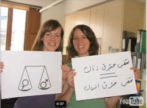
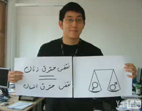

|
|

کلیپ جدید امنستی درهمبستگی با کمپین و فعالان آن
جمعه1 خرداد 1388
تغییر برای برابری - کلیپ جدید امنستی شعبه انگلستان در همبستگی با کمپین یک میلیون امضا ،
این کلیپ را می توانید در لینک های زیر ببنید ویا دانلود کنید.
به امید آزادی فعالان دربند: جلوه جواهری ، امیریعقوبعلی، کاوه مظفری و پوریا پوشتاره
در همبستگی با کمپین برای برابری
In solidarity with the campaign for equality
یا
http://www.amnesty.org.uk/content.asp?CategoryID=11221
تصاویری از این کلیپ :

